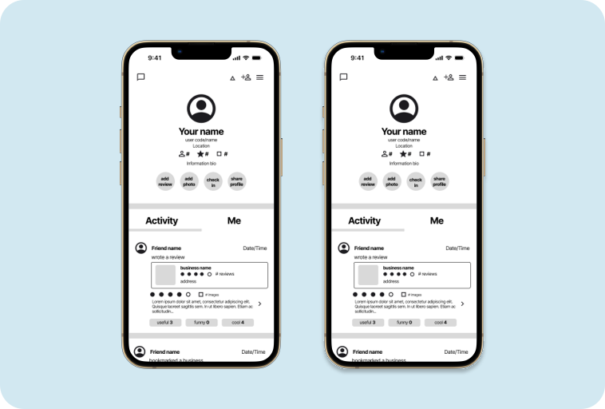
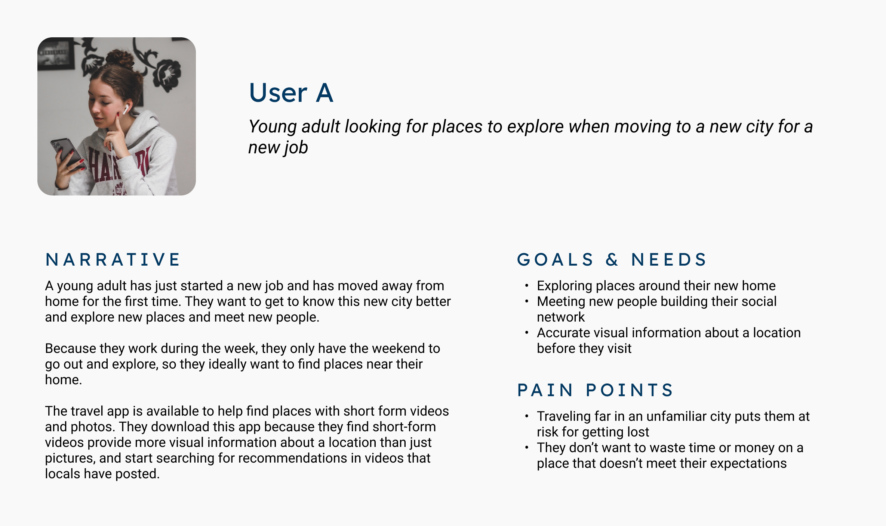
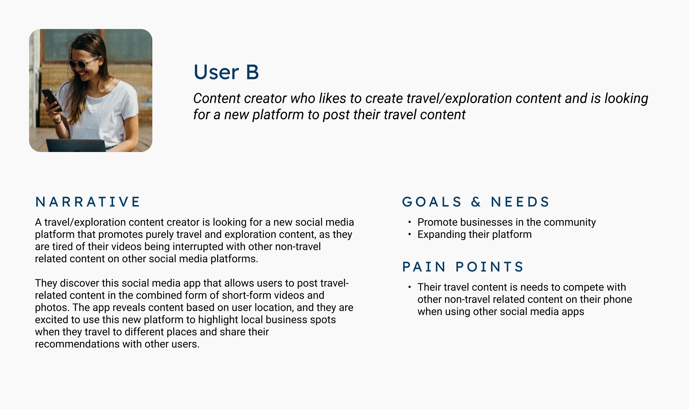
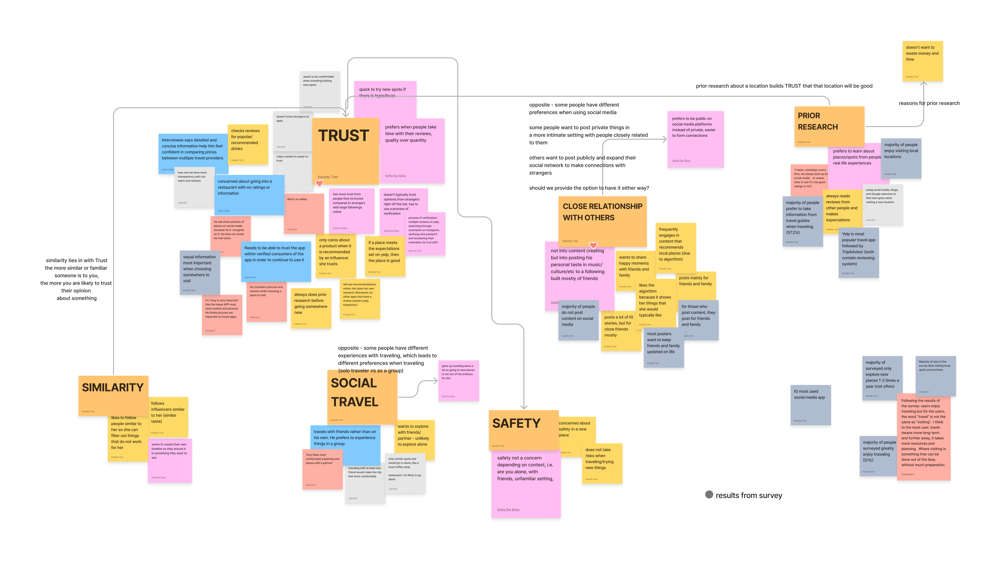
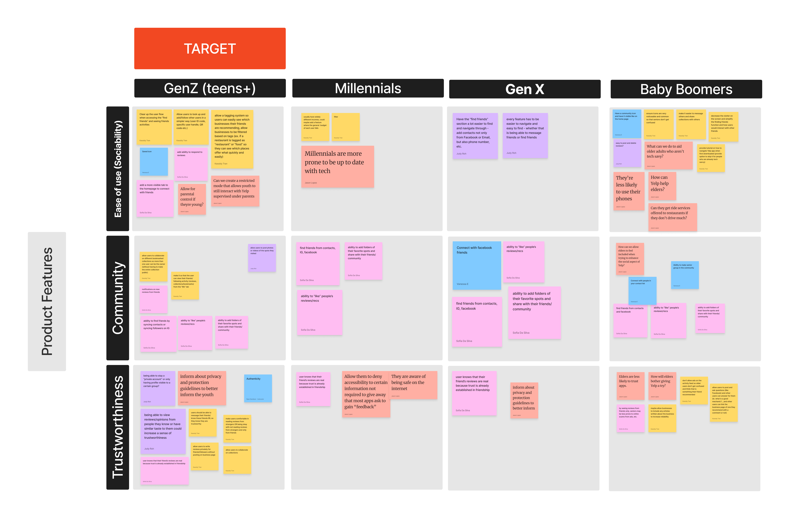
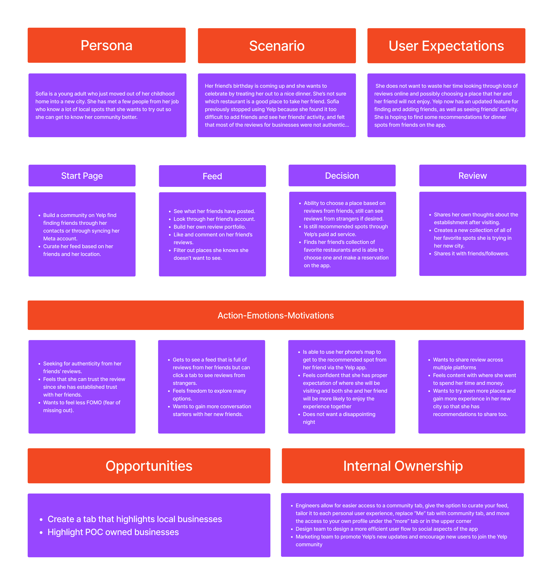

Yelp Community
Using social relationships to communicate authenticity in online reviews
Product & UX Design, UX Research
February - March 2023

Overview
In Feburary 2023, we were tasked with a design challenge that required us to connect a traveler to a service provider. The prompt states as follows:
Travel is about going new places, and more important, meeting new people. Great travel requires an element of discovery. Your Design Challenge is to connect a traveler (User A) with a service provider (User B). The service provider could be a hotelier, restaurant owner, tour guide, local expert.
Our solution was to this challenge was Yelp Community, an extension of the Yelp mobile app designed to connect users and build users’ trust in online reviews, as well as increase appeal of the app to a younger user demographic. Our team of 5 UX design students completed this project over 5 weeks, starting with user research and ending with our first round of usability testing.
Roles & Responsibilities
- Conducting user interviews and secondary user research
- Analyzing user insights from user interviews, survey results, and secondary user research
- Creating and ideating behavioral archetypes for user groups
- Building mid-fidelity prototypes in Figma for usability testing
- Creating slide deck for final presentation
Defining the problem
My team made two initial assumptions about travelers:
- They struggle to find visually accurate travel recommendations online and want to explore local spots
- They want to share their favorite spots to visit with others on social media
These inital assumptions led us to what we believed was the problem:
How might we create a social media platform that encourages travelers to explore local destinations with visual information?
Jumping on the trends at the time, we proposed the idea to present visual information as short-form videos, combined with additional information about the location being depicted.
Preparing for user research
We drafted a discussion guide for our user interviews, planning to ask users about their behavioral habits when traveling and using social media, as well as their attitudes towards our concept.
We also drafted behavioral archetypes for two user groups, content creators and viewers.


Results of user research
User Interviews
User research quickly upended our initial assumptions. There were three major issues with our concept:
- Concern for safety/willingness to post publicly - Users (particularly female) aren’t willing to explore new places without their own prior research, nor are they willing to post visual information about their current location on the internet.
- Lack of trust - Users are unlikely to trust any recommendations they see online unless they know the original reviewer is someone who shares similar interests as them.
- Doesn’t this already exist? - Many solutions for this problem space already exist in the form of well established travel sites and social media algorithms.
"I don't really travel or check out different places solo…obviously safety is one of the biggest concerns for most women…." - Female interviewee, age 22
"I typically don't just like see one video from someone and then immediately trust their recommendations." - Female interviewee, age 23
"I downloaded Yelp and I was searching for popular places in…Irvine, and we ended up going to a Korean barbecue spot. And experience was actually pretty good…" - Male interviwee, age 19
Survey and secondary user research
Our survey results showed that Yelp was our users’ most commonly used review app. A cognitive walkthrough of Yelp revealed that although Yelp had exisiting social features, they were difficult to navigate from a user’s perspective.
Additional secondary research also revealed:
- The majority of Yelp’s current user base is age 35 or older
- Younger users, particularly Gen Z users, are less likely to trust reviews from strangers online, but are more willing to trust “word of mouth” recommendations
Redefining the problem
With these new user insights from our research, we backtracked to redefine the problem.
All insights gained from our primary research were sorted in an affinity map, and we discovered that trust, sharing a close realtionship with others, and the need to do prior research were the most notable concerns of users when traveling or when using social media to purchase products or visit new locations.

We realized that the actual problem lies more in the trustworthiness of recommendations rather than the need for recommendations. Our iterated problem statement reads:
How might we create a trust-based community that sets appropriate expectations and reduces the time users spend on prior research on new locations?
We also updated our behavioral archetypes to better represent our users.
In addition to our iterated behavioral archetypes, we also developed a POV statement using the Why-How laddering method in order to understand the root motivations of the user and how we might provide them with what they need:
A new user who is unfamiliar with using social platforms needs a more convenient method of finding trustworthy reviews for local restaurants and businesses so that they set proper expectations when visiting a new location.
In this statement, we are able to consider:
- What kind of user - a user who isn’t used to using Yelp or social media apps
- What the user needs - a simplified interface and user flow so they don’t get confused
- What the user values - trustworthy reviews
- What the user wants - proper expectations before visiting to a new location, decreased risk of disappointment
Ideating the solution
To ideate solutions for improving Yelp’s social platform, we conducted a group rapid brainstorming session using a creative matrix, organized by age groups and themes we wanted to address based on our cognitive walkthrough.

After everyone listed out their ideas on how we might improve the experience for each age group, we discussed our results and noted three major features we wanted to include:
- Easier access to activity page from home screen so users don’t need to actively search through the app to see their social activity
- Improve user experience when finding/adding friends to improve interactions between users
- Provide options for profile privacy so users can control who can see the content they post
Mapping the user’s journey
To empathize with the user and how they might interact with this design, we created a user journey map that follows one user through a scenario in which they might use the feature:

Creating a mid-fidelity prototype
Reorganizing the menu bar content
For this project we created low-fidelity wireframes to visualize a new layout for our activity page, and to map out a new user flow for adding other users and accessing the activity feed. To do this, we re-organized the bottom navigation menu, replacing the “More” menu item with a “Community” menu item. The contents under the previous “More” menu item were moved to the profile page, or the “Me” menu item.
Designing a new community page
Our new “Community” page was divided into two sections: an “Activity” section and “Talk” section. The Activity section is where a user can view their friends’ reviews, check-ins, and social activity, while the “Talk” section brings out an existing Yelp social feature that had been previously located at the bottom of the “More” page, where users can join forums to talk about different topics.
Simplifyng the user flow for adding friends
The user flow to add friends was also modified to include less clicks. Now, each user has their own unique username. Users can add friends by going to the profile page and clicking on the + icon, then search their friends’ usernames to add them.
User testing results
We conducted a series of moderated, remote usability tests, where users were asked to complete two tasks: adding a friend and finding friends’ reviews. While all users tested mentioned that they liked the concept, there were a few areas that required further improvements.
- Users reported that the name “Community” was too ambiguous in meaning - some users interpreted it as a place to see their friends’ activity (as we initially intended), while others thought it stood for local community recommendations.
- Many testers struggled to find the add friends function, indicating that we need to edit the icon to communicate more clearly what the button stands for.
- Finally, it was noted that some users initially clicked on the search bar on the home page to search for friends’ reviews. When asked for the reasoning behind their behavior, a user mentioned that they anticipated to search for a place to visit first, then hope to see their friends’ reviews highlighted in their search. Our team believed this was an interesting direction to explore if we had the time to expand further on this project.
Learning opportunities
As our first UX design challenge, we learned many unforgettable lessons about the design process. While we inially started off by defining the problem and ideating solutions before doing adequate research, we realized that we needed to take a step back to analyze user insights and redefine our problem space. Listening to our users led us back on track to designing a solution that would actually target users’ pain points.
Likewise, we learned a lot about desgining a product from a business standpoint. While it is important to consider the user’s perspective, we also needed to consider the costs and benefits of this design to Yelp as a company.
“How might we incentivize users who don’t normally use Yelp to actually use the app?”
Questions like these were crucial to understand and answer, as we were designing from both a business perspective and user’s perspective. In this way, we learned the importance of viewing the problem space from different perspectives and designing a solution that addresses both stakeholder and user needs.